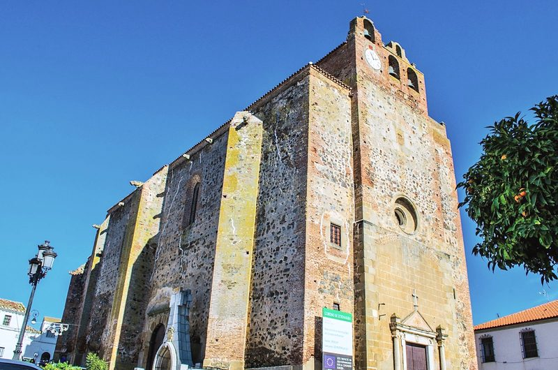
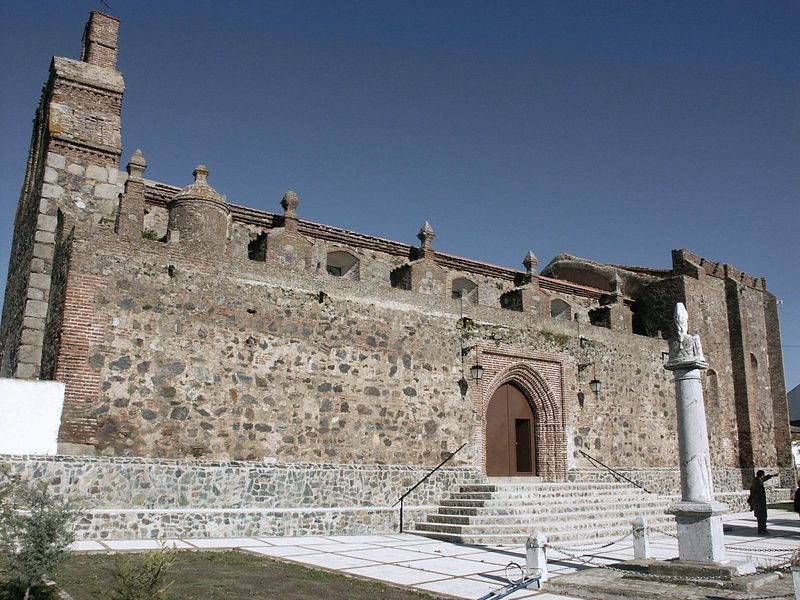
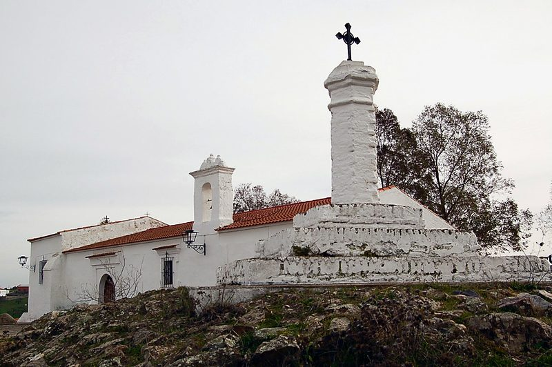
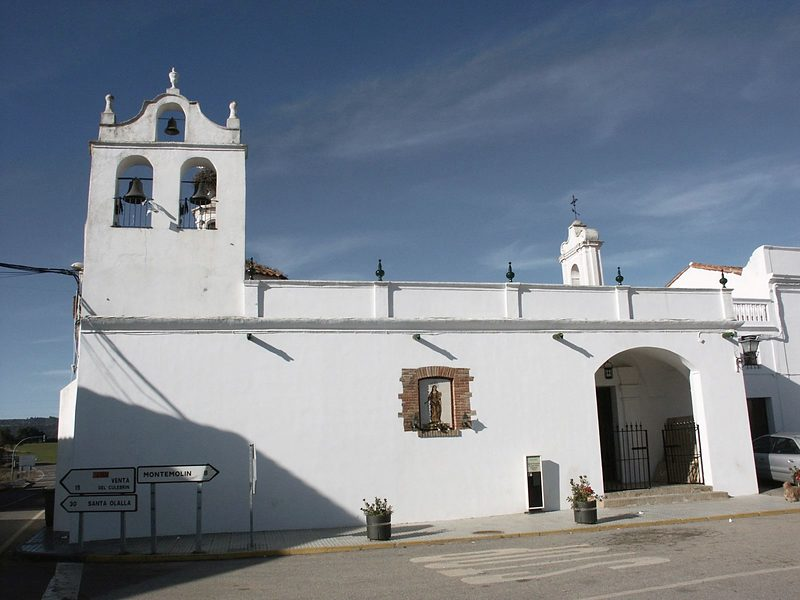
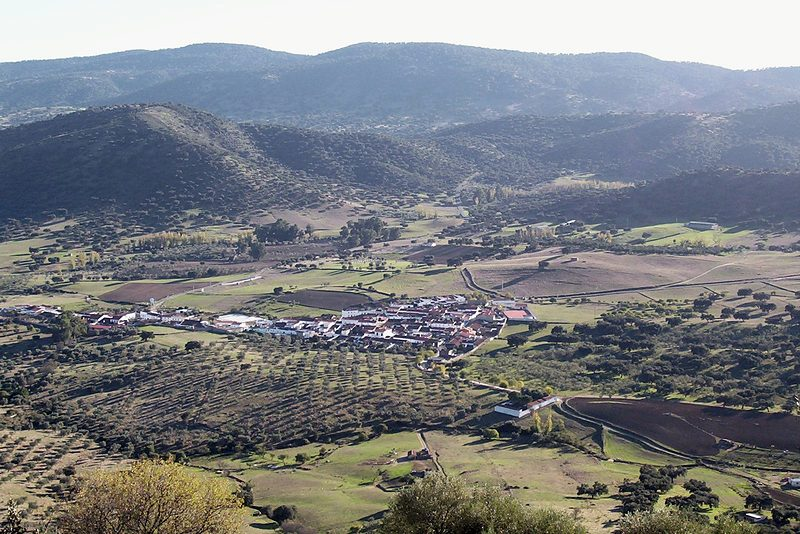
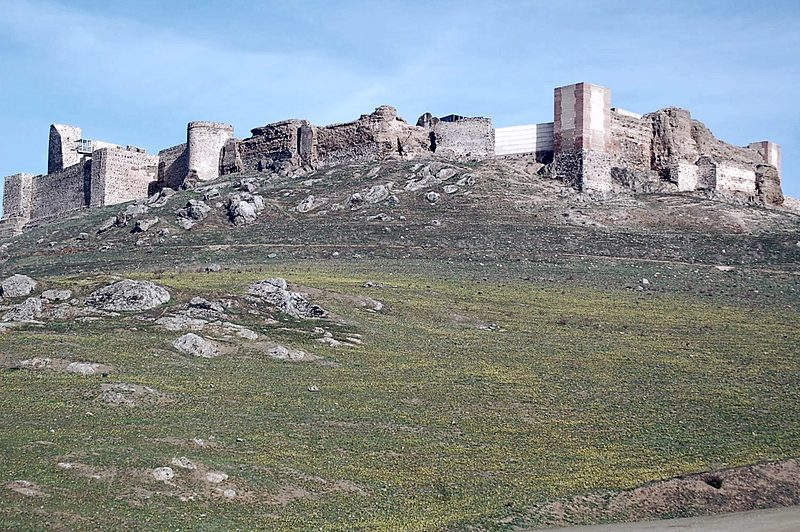

El pueblo
En el sur de Badajoz, entre la dehesa y Sierra Morena, Montemolín guarda un castillo almohade y una parroquia del siglo XVI. Tiene a su cargo Pallares y Santa María de Nava.
Qué ver
-

Parroquia de la Purísima Concepción
Gótico-renacentista, de nave única y piedra sin encalar, empezada tras un privilegio de Carlos I de 1523. El retablo mayor se pintó entre 1625 y 1677.
Foto: Adolfobrigido · CC BY-SA 4.0
-

Ermita de Nuestra Señora de la Granada
Fue la primera parroquia de la villa, bajo la advocación de Santiago Apóstol. Junto a ella está el Paseo de Martín Álvarez.
Foto: Ayuntamiento de Montemolín (web municipal) · Sin licencia declarada: solo para esta maqueta
-

Ermita de San Blas
Ermita encalada con espadaña y un crucero blanco. San Blas se celebra el 3 de febrero, fiesta local de Montemolín.
Foto: Ayuntamiento de Montemolín (web municipal) · Sin licencia declarada: solo para esta maqueta
-

Iglesia de Santa María Magdalena, en Pallares
La iglesia de Pallares, que está a 8 kilómetros de Montemolín. Su patrona es Santa María Magdalena, el 22 de julio.
Foto: Ayuntamiento de Montemolín (web municipal) · Sin licencia declarada: solo para esta maqueta
-

Iglesia de Santa María
Santa María de Nava es el otro núcleo del término, a 21 kilómetros de Montemolín. Su iglesia es la de Santa María y su plaza, la Plaza de España.
Foto: Ayuntamiento de Montemolín (web municipal) · Sin licencia declarada: solo para esta maqueta
-

Castillo almohade
Fortaleza del siglo XII sobre una colina al oeste del pueblo, de unos 130 por 50 metros. Conserva siete cubos, la torre del Homenaje (hoy mirador), una mazmorra y un aljibe.
Foto: Ayuntamiento de Montemolín (web municipal) · Sin licencia declarada: solo para esta maqueta
El término en un mapa
Lugares del mapa
- Castillo almohade
- Parroquia de la Purísima Concepción
- Ermita de Nuestra Señora de la Granada
- Iglesia de Santa María Magdalena, en Pallares
- Iglesia de Santa María
- Ermita de San Benito
- Paseo y monumento de Martín Álvarez
Cómo leerlo
- Límite del término municipal (línea discontinua)
- El pueblo (área sombreada)
- Carreteras (línea gruesa): A-66, BA-067, BA-093, BA-094, BA-110, EX-103 y EX-318
- Círculo con número: un lugar de la lista
- Escala: la barra de abajo mide 5 km
- Recuadro: el pueblo ampliado; su barra mide 250 m
- Raya fina con un punto: el sitio exacto, cuando el número se ha apartado para que se lea
Para visitar
-
Castillo almohade
Los restos consolidados se pueden visitar. Lo más interesante es la mazmorra, el aljibe y la torre del Homenaje, convertida en mirador.
- Dirección
- Margen occidental del pueblo
El Ayuntamiento no publica horario: pregunte en el 924 510 001 antes de ir.
Historia
Montemolín está en la falla de Ossa Morena, que en la época prerromana separaba la Beturia Céltica de la Beturia Túrdula. Hay yacimientos de la Prehistoria a las afueras. De la época romana quedan hallazgos como un capitel corintio de una necrópolis junto al río Viar, que hoy sirve de pila bautismal en la parroquia.
Entre los siglos XII y XIII hubo aquí un asentamiento musulmán y una fortaleza almohade. El Ayuntamiento cuenta que el nombre viene de la reconstrucción de la villa tras Las Navas de Tolosa, en 1212: «Mente» por la tierra de sus pobladores y «Molín» por el Miramamolín. Es la explicación del Ayuntamiento, no contrastada.
En 1246 el maestre de la Orden de Santiago, Pelay Pérez Correa, tomó la fortaleza tras la batalla de Tentudía. En 1248 el rey Fernando III la dio a la Orden a cambio de Cantillana. Montemolín fue cabecera de las Cinco Villas Hermanas del Maestrazgo, con Fuente de Cantos, Calzadilla, Medina de las Torres y Monesterio.
En 1282 Alfonso X le concedió fuero propio por la lealtad de sus vecinos. En 1608 Felipe III vendió las Cinco Villas a unos banqueros genoveses y en 1684 se creó el título de marqués de Montemolín. Más tarde la Corona recompró la jurisdicción y la villa volvió a ser de realengo.
Entre 1845 y 1861 el pretendiente carlista Carlos Luis de Borbón tomó el título de conde de Montemolín. En 1833 la villa había quedado en el partido judicial de Llerena; hoy pertenece al de Zafra y a la comarca de Tentudía.
Patrimonio
Montemolín
- Castillo almohadeFortaleza de tapial y, desde 1248, de ladrillo y sillería, con la torre del Homenaje y la de Miramontes. La actuación del Proyecto Alba Plata (Junta de Extremadura), a comienzos del siglo XXI, detuvo su deterioro. A su torre semicircular del sur la llaman «el Plato de la Reina».
- Parroquia de la Purísima ConcepciónDe 70 por 32 metros y 18 de alto. Tiene una portada sur neoclásica con el reloj de la villa y otra occidental renacentista de 1573, gárgolas con los siete pecados capitales y 14 altares con retablos de los siglos XVII y XVIII.
- Ermita de Nuestra Señora de la GranadaAntigua parroquia de Santiago Apóstol, a las faldas del castillo y junto al paseo de Martín Álvarez.
- Ermita de San BlasDentro del casco, junto a la calle San Blas. Algunos mapas la llaman ermita de Nuestra Señora de Gracia.
- Ermita de San BenitoA las afueras. La web municipal cuenta que sus altares se llevaron a la parroquia cuando se cerró al culto, junto con los de la ermita del Espíritu Santo.
- Paseo y monumento de Martín ÁlvarezInaugurado en 1938 junto a la ermita de la Granada, con la estatua del granadero.
Pallares
- Iglesia de Santa María Magdalena, en PallaresIglesia de Pallares, con su altar mayor. La plaza del pueblo es la Plaza de España.
Santa María de Nava
- Iglesia de Santa MaríaCon una torre de ladrillo sobre un muro encalado.
Fiestas
Enero
Sin fiestas señaladas
Febrero
- San Blas y las Candelas2 y 3 de febrero. El 3 es fiesta local
- CarnavalFebrero o marzo
Marzo
Sin fiestas señaladas
Abril
Sin fiestas señaladas
Mayo
- San Isidro Labrador15 de mayo, fiesta local
Junio
Sin fiestas señaladas
Julio
- Santa María Magdalena, en Pallares22 de julio
- Fiestas patronales de Santiago Apóstol Fiesta mayorEn torno al 25 de julio
Agosto
- Fiesta del GuarritoPrimera semana de agosto (en 2026, el 7 y el 8; fue la XXII edición)
- Fiesta del Emigrante, en PallaresMediados de agosto (en 2026, del 10 al 12)
- Fiestas patronales de Santa María de NavaFinales de agosto (en 2026, del 25 al 28)
Septiembre
- Fiestas patronales de PallaresPrincipios de septiembre. El 4 de septiembre es fiesta local de Pallares
Octubre Este mes
Sin fiestas señaladas.
Lo siguiente: Encantos navideños, diciembre
Noviembre
Sin fiestas señaladas
Diciembre
- Encantos navideñosDiciembre, en la Plaza de la Constitución (en 2025, el 20 y el 27 a las 19:00)
Personajes
Martín Álvarez y Galán
1766-1801
Infante de Marina, héroe de la batalla del cabo de San Vicente (14 de febrero de 1797). Herido, siguió defendiendo la bandera del navío «San Nicolás de Bari». Un buque de la Armada llevará su nombre.
Casiodoro de Reina
h. 1520-1594
Monje jerónimo nacido en Montemolín que se exilió por sus ideas protestantes. Imprimió en Basilea, en 1569, la primera Biblia completa en castellano traducida del hebreo y del griego: la «Biblia del Oso».
Carlos Luis de Borbón y Braganza
conde de Montemolín de 1845 a 1861
Pretendiente carlista al trono con el nombre de Carlos VI. No nació aquí: su título de conde viene de la villa.
Rutas
Red de Ciudades en la Ruta de la Plata
Montemolín está adscrito a esta red desde el 15 de diciembre de 2011.
Créditos de las fotos
- Ermita de Nuestra Señora de la Granada: Ayuntamiento de Montemolín (web municipal), Sin licencia declarada: solo para esta maqueta (ficha de la foto). Foto de galeria/20140221125856.jpg de la web municipal («Ermita de la Granada»).
- Vista general de Montemolín: Ayuntamiento de Montemolín (web municipal), Sin licencia declarada: solo para esta maqueta (ficha de la foto). Foto de galeria/20140220102608.jpg de la web municipal («Vista general Montemolín»).
- Castillo de Montemolín: Ayuntamiento de Montemolín (web municipal), Sin licencia declarada: solo para esta maqueta (ficha de la foto). Foto de galeria/20140326124933.jpg de la web municipal («Castillo Montemolín»).
- Iglesia parroquial de la Purísima Concepción: Adolfobrigido, CC BY-SA 4.0 (ficha de la foto). Subida a Commons el 13-01-2017.
- Ermita de San Blas: Ayuntamiento de Montemolín (web municipal), Sin licencia declarada: solo para esta maqueta (ficha de la foto). Foto de galeria/20140326124753.jpg de la web municipal («Ermita de San Blas»).
- Iglesia de Santa María Magdalena de Pallares: Ayuntamiento de Montemolín (web municipal), Sin licencia declarada: solo para esta maqueta (ficha de la foto). Foto de galeria/20140326124700.jpg de la web municipal.
- Santa María de Nava, vista desde lo alto: Ayuntamiento de Montemolín (web municipal), Sin licencia declarada: solo para esta maqueta (ficha de la foto). Foto de galeria/20140328134225.jpg de la web municipal.